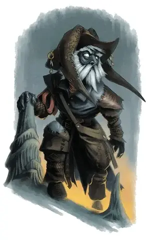

Дроки
Droki
Маленький Гуманоид (Дерро), хаотично-злой, именной НИП

Класс Доспеха 15 (клепаная броня)
Хиты 31 (7к6 + 7)
Скорость 30 футов (60 с ботинками скорости [boots of speed])
| мод | спас | ||
|---|---|---|---|
| СИЛ | 11 | +0 | +0 |
| ЛОВ | 16 | +3 | +3 |
| ТЕЛ | 13 | +1 | +1 |
| мод | спас | ||
|---|---|---|---|
| ИНТ | 10 | +0 | +0 |
| МДР | 5 | −3 | −3 |
| ХАР | 16 | +3 | +3 |
Навыки Скрытность +5
Чувства тёмное зрение 120 футов, пассивное Восприятие 7
Языки Дварфийский, Подземный
Опасность 2 (450 опыта)
Бонус мастерства +2
Особенности
Особенное снаряжение. Дроки носит сапоги скорости [boots of speed].
Безумие. Дроки обладает преимуществом к спасброскам проив очарования и страха.
Врождённое колдовство. Базовой характеристикой Дроки является Харизма (Сл спасброска от заклинаний 13). Он может читать следующие заклинания без использования материальных компонентов:
• Неограниченно: малая иллюзия [minor illusion];
• 1/день каждое: тьма [darkness], ужас [fear], дребезги [shatter].
Сопротивление магии. Дроки обладает преимуществом к спасброскам против заклинаний и других магических эффектов.
Скрытая атака (1/ход). Дроки наносит дополнительный урон 7 (2к6) попадая по цели атакой оружием, если обладает преимуществом на бросок атаки или если его цель находится в пределах 5 футов от дееспособного союзника Дроки, а Дроки не имеет помехи на бросок атаки.
Чувствительность к солнечному свету. Дроки совершает с помехой броски атаки и проверки Мудрости (Внимательность), основанные на зрении, находясь на солнечном свете.
Действия
Мультиатака. Дроки совершает две атаки своим коротким мечом.
Короткий меч. Рукопашная атака оружием: +5 к попаданию, досягаемость 5 фт., одна цель. Попадание: колющий урон 6 (1к6 + 3). Меч покрыт змеиным ядом, стирающимся с него после первого попадания. Цель, ставшая его жертвой, должна совершить спасбросок Телосложения Сл 11, получая урон от яда 10 (3к6) при провале или половину этого урона при успехе.
Реакции
Парирование. Дроки добавляет 3 к своему КД против одной рукопашной атаки, направленной против него. Чтобы это сделать, Дроки необходимо видеть атакующего и держать в руке оружие ближнего боя.